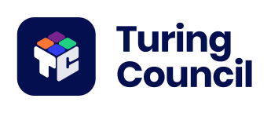
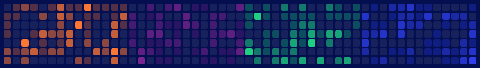
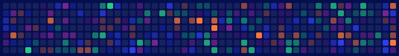
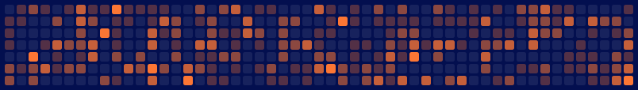
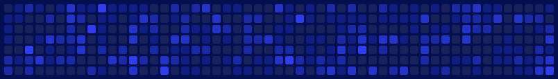
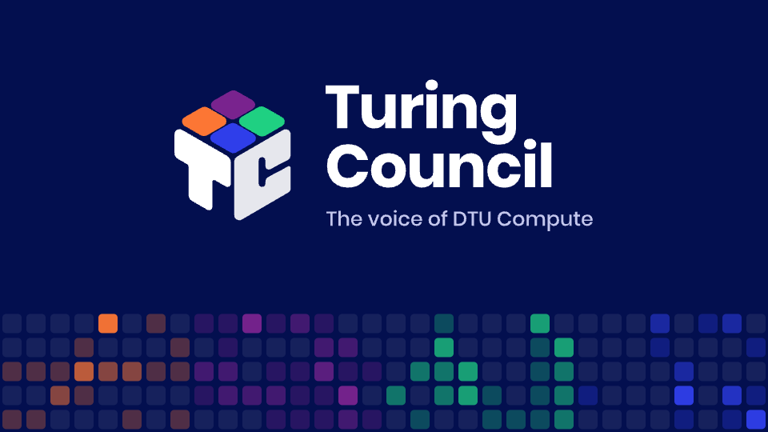

Who we are, what the cube means and how we talk.
The Turing Council is the student council for master's students at DTU Compute. We represent the students in four study lines: Computer Science and Engineering, Human-Centered AI, Mathematical Modelling and Computation, and Autonomous Systems.
We speak for students at department and faculty meetings, connect them with industry and research groups, and run social and learning events like Career Night and Research and Thesis Night.
The voice of DTU Compute.
Used under the name in lockups, as the sign-off in posts and on covers. Always in this wording, always sentence case.
The cube is built from our initials: the T on its left face, the C on its right. On top sit four tiles, one for each study line, each in its own DTU colour. They're the same size and all lit at once: no study line comes first, and together they make the department.
The tiles are also bits: switched on, side by side. That idea carries into the bit grid pattern in chapter 06.
Short sentences. Say what happens, when and where. No jargon from the department's meeting notes.
We're fellow students, not an office. Write "we" and "you", use contractions.
Name the study lines by name. Don't let one line's slang or examples stand for everyone.
A bit pun or a binary joke now and then is welcome. Never at the cost of being understood.
DTU Navy blue first. White for text. Four DTU secondary colours as study-line accents, each with five intensity levels.
#030F4FRGB 3 15 79 · CMYK 100 94 44 40 · Pantone 655 CMain background. Most of every layout. DTU secondary colour.#FFFFFFRGB 255 255 255Text and the letters of the cube. DTU primary colour.#C3C6ECRGB 195 198 236Secondary text on navy: taglines, dates, captions. Our own addition, not a DTU colour.Four of the secondary colours in DTU's design guide. The study-line assignment is ours: DTU doesn't give departments or study lines their own colour. Each colour belongs to one study line. Use it for that line's events and content, and all four together only for things about the whole council.
Like a contribution graph, every study-line colour has five steps from "empty" to "full". These steps are our own blends towards navy, not DTU's official tints (80, 70, 60 and 50 %). They're used in the bit grid and in charts. Level 0 is the same for all four lines.
Navy carries the layout, white carries the words, colour is the accent. If a piece looks like a rainbow, there is too much colour.
| Colour | On navy | On white |
|---|
4.5:1 or more is fine for text. Blue and purple are for tiles and shapes on navy, never for text there. Orange and green never carry text on white.
DTU Navy blue, White and the four study-line colours are DTU's official colours, from the DTU design guide: designguide.dtu.dk/colours. The page also lists CMYK and Pantone values for print. The navy scale, lilac, paper and the intensity levels are Turing Council additions.
The cube, its lockups with the name, and the one-colour version.
For stamps, laser engraving, foil, embroidery and one-colour print. Everything in a single ink; the gaps between tiles and letters carry the shape.
tc-logo-mono-whitetc-logo-mono-blacktc-logo-mono-navy


Every lockup exists as dark (white text), light (navy text, cube in its tile), mono white and mono black. The name is set in Poppins Bold and converted to outlines in the files, so it looks the same everywhere.
X is the height of one top tile. Keep at least X empty on every side. The exported files already include it.
| Version | Screen | |
|---|---|---|
| Cube | 24 px tall | 10 mm tall |
| Horizontal lockup | 120 px wide | 30 mm wide |
| Lockup with tagline | 200 px wide | 45 mm wide |
| Favicon | 16 px | – |
Below these sizes the tiles merge. Drop the tagline first, then the name.
Poppins for everything people read. JetBrains Mono for the small technical labels.
| Style | Font | Size / line | Tracking | Sample |
|---|
Both are free on Google Fonts: fonts.google.com/specimen/Poppins and fonts.google.com/specimen/JetBrains+Mono.
If Poppins isn't available (Word on a shared PC, for example), use Arial. Never a script or decorative font.
Duotone: navy shadows, study-line colour highlights. Any phone photo becomes ours.
#030F4F on the left, the study-line colour on the right.The bit grid: rounded cells like a contribution graph, lit in the study-line colours.

Square cells with corners rounded to 20% of the cell. The gap is a quarter of the cell. Each cell shows one of the five intensity levels from chapter 02. Columns read left to right, like weeks on a contribution graph.



06-pattern/ has every variant as SVG, a 2400 px wide strip and a full 1920 × 1080 background.
How it comes together, and who looks after it.
1640 × 624
960 × 5401128 × 1911584 × 396An event for one study line uses that line's colour: in the duotone photo, the bit grid and small accents. The logo itself never changes.
Navy, white and all four colours together, through the four-band bit grid or the logo. Duotones go navy to lilac.
Next to the DTU logo or a company logo, use the horizontal lockup at the same height as their logo, with clear space between. Never merge logos.
Start from the backgrounds in 05-social/background: navy, logo in the corner, bit grid at the bottom. Headline in Poppins Bold, date in JetBrains Mono.
Always take files from the brand kit, never from a screenshot or an old post. Name new files tc-[what]-[variant]-[size].
Marketing and Communications keeps the master files in the shared Drive and approves new templates. Ask in the council chat before making a new one.
Every file, where it lives and what size to use.
tc-[what]-[variant]-[background]-[size].png. For example tc-logo-color-transparent-1024.png, tc-lockup-horizontal-tagline-dark-2400w.png, tc-banner-linkedin-company-1128x191.png. Sizes ending in w are widths, the height follows the artwork.
| Use | Pixels | File |
|---|
Platform sizes change from time to time. Check the platform's help page before uploading a new banner. For anything printed, use the SVG or a PDF, not PNG.